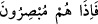

Aydınlık, havadan çekilince ortalık karanlığa bürünür. Bu mânâya (sıyırıp çekme ve
giderme) göre gecenin karanlık bölgelerinden aydınlığın giderilmesinin ardından
meydana gelen durum, karanlığın ortaya çıkmasıdır. Tıpkı derinin yüzülmesinin
ardından derisi yüzülen şeyin ortaya çıkması gibi.
Çıkarma mânâsına göre ise geceden gündüzün çıkarılmasından sonra meydana gelen
şey karanlıklara gömülmek değil, görmektir. Bu makamda “__WORD__ (onlar hemen
görürler)” denilecek makamdır. Fakat gece üzüntü, elem ve görmeme zamanı; gündüz
ise sevinç, mutluluk ve görme zamanı olduğundan sanki gündüzün geceden
çıkarılmasının ardından hiç beklemeden gece ânîden gelmiş gibi kabul edilmiştir. Çünkü
mutluluk zamanı ne kadar uzun olsa da hükmen mühleti yoktur/çabuk geçer. Gam zamanı
ise bunun aksidir. Kısa da olsa onun mühleti çabuk geçmez. Nitekim “Vuslatın bir senesi
bir uyuklama gibidir. Ayrılığın bir uyuklama müddeti ise bir sene gibidir.” denilmiştir.
Yine şiirde şöyle denilmiştir:
Seni görmediğim bir gün bin ay gibidir
Seni görmediğim bir ay ise bin yıl gibidir.
Hâfız der ki:
Seninle beraber olduğum bir yıl bir gün gibidir
Sensiz bir ânım bir yıl gibi gelir
Zamanın mihnetleri çoktur, bitip tükenmez
Mutluluğu ise sana bayramlar gibi az gelir.
Selmân (r.a.)’dan rivâyet edilen haberde şöyle demiştir: “Gece ile ilgili Şerâhîl
denilen bir melek görevlendirilmiştir. Gece vakti gelince bu melek siyah bir boncuk alır
ve bu boncuğu batıya doğru sarkıtır. Güneş bu boncuğu görünce göz kırpmaktan daha
hızlı bir sürede batar. Ona boncuğu görmeden batmaması emredilmiştir. Güneş batınca
gece gelir. Görevli meleğin iki kanadının altından karanlık her tarafa yayılır. Beyaz bir
boncuk ile Herâhîl denilen başka bir melek gelinceye kadar bu siyah boncuk asılı kalır.
Herâhîl isimli melek bu beyaz boncuğu güneşin doğacağı taraftan asar. Güneş bu
boncuğu görünce göz kırpacak kadar bir sürede doğar. Zaten bu beyaz boncuğu
görmeden doğmamakla emrolunmuştur. Güneş doğunca gündüz gelir. Aydınlık meleğin
iki kanadı altından her tarafa yayılmıştır. Şu halde güneşin doğması ve batması sırasında
gündüzün aydınlığı için görevli bir melek, gecenin karanlığı için de görevli bir melek
vardır. Nitekim haberlerde böyle vârid olmuştur. Süyûtî bunu el-Hey’etü’s-seniyye adlı
kitabında zikretmiştir.
Keşfü’l-esrâr’da der ki: “Büyüklerden birisine “Gece mi daha faziletlidir, gündüz
mü?” diye sordular. Cevap verdi ki: “Gece daha faziletlidir. Çünkü gece boyunca rahat
ve huzur vardır. Rahat ise cennettendir. Gündüzde ise tamamen maîşet talebi yolunda